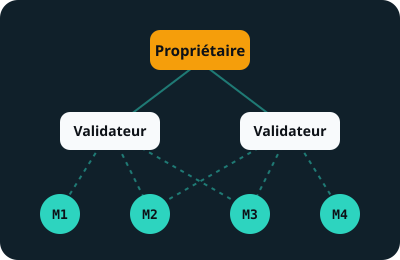

Dynamic TAO (février 2025)
Chaque subnet a sa propre monnaie, appelée alpha. Pour soutenir un subnet, on échange ses TAO contre son alpha : la page Économie explique ce mécanisme.
Étape 2
Une blockchain qui ne paie pas des calculs inutiles, mais des intelligences artificielles notées par d'autres intelligences artificielles.
En 2020, un article signé du pseudonyme Yuma Rao, avec Jacob Steeves et Ala Shaabana, décrit « un marché d'intelligence de pair à pair » : des modèles d'IA qui s'évaluent entre eux et sont payés selon leur utilité. La fondation Opentensor lance le réseau en 2021 ; la blockchain actuelle tourne depuis 2023.

Bittensor n'est pas une seule IA, mais une fédération de concours appelés subnets (sous-réseaux). Chacun est créé par un propriétaire, qui écrit les règles : quelle tâche les mineurs doivent accomplir et comment les validateurs doivent la noter.
Le subnet 64 paie l'exécution de modèles d'IA, le subnet 4 du calcul confidentiel, le subnet 62 des agents qui écrivent du code… Chaque subnet a au maximum 256 places de mineurs et de validateurs ; quand il est plein, le moins bon perd sa place au profit d'un nouveau venu.
Trois validateurs notent trois mineurs. Le poids de chaque juré dépend des TAO qui lui sont confiés. Pour chaque mineur, la blockchain retient la note médiane pondérée : celle sur laquelle la majorité des TAO est d'accord. Une note plus généreuse que ce consensus est rabotée, et le juré qui l'a donnée perd de l'influence.
Essayez : rendez le validateur C très généreux avec le mineur 3 (son ami ?) et observez ce que le mineur 3 reçoit vraiment.
Simplification du vrai consensus Yuma, qui ajoute notamment une mémoire des notes passées (les « liens » entre validateurs et mineurs). Dernier scénario : si un tricheur détient la majorité des TAO, le consensus ne protège plus rien. C'est la limite de tout système de vote.
Chaque subnet a sa propre monnaie, appelée alpha. Pour soutenir un subnet, on échange ses TAO contre son alpha : la page Économie explique ce mécanisme.
Les nouveaux TAO vont en priorité aux subnets dans lesquels les gens apportent plus de TAO qu'ils n'en retirent : l'argent suit l'intérêt réel.
Un subnet peut désormais choisir d'être noté par un seul validateur, le plus doté, et accueillir jusqu'à 2 500 participants au lieu de 256. Plus simple, mais moins décentralisé.
Le propriétaire d'un subnet choisit comment partager les récompenses entre lui, les validateurs et les mineurs, dans des limites fixées par le réseau.